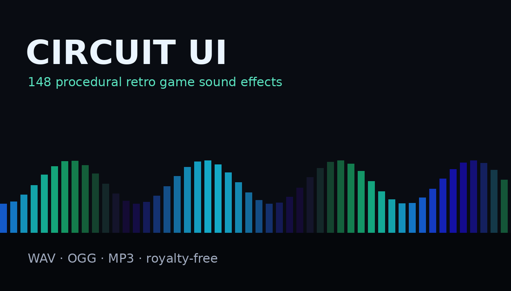

Game audio asset pack
148 procedural retro/arcade sound effects for game jams, prototypes, pixel-art games, and 8-bit/chiptune-style projects. Delivered in WAV, OGG, and MP3 with a royalty-free commercial-use license.
Exact-amount Lightning or Bitcoin invoice. After payment confirmation you are redirected automatically to the full-pack download. Keep the checkout/receipt URL until your download completes. Manual fallback payments are verified manually, normally within 24 hours.

Free sample player
Individual CC0 mirrors: UI click, coin, explosion. Full mirror list is in the sample repository, or use the free sample download page.
Inside the pack
Clicks, hovers, backs, confirms, errors, toggles, and typewriter ticks.
Coins, pickups, powerups, jumps, landings, hits, lasers, explosions, and whooshes.
Alarms, success, fail, and secret discovery cues for compact feedback moments.
Formats
| Format | WAV 44.1 kHz / 16-bit, OGG, MP3 |
|---|---|
| Count | 148 sound effects per format |
| Metadata | CSV with filename, category, duration, and description |
| Generator source | Command-line Python synthesis source included for studying, adapting, and generating reproducible custom variations |
| License | Royalty-free commercial use in games, videos, streams, apps, and prototypes |
| Delivery | Automatic download redirect after confirmed BTCPay invoice payment |
Buy or test first
Try the free 12-sound sample before buying. The full pack is a zip file with WAV, OGG, MP3, metadata, license, cover, preview, and generator source for custom variations.
Download the free sample pack · GitHub sample release · Free browser SFX generatorYou may use purchased sounds in unlimited commercial projects, but may not redistribute them as a standalone sound pack. Read the full license before buying.
Why curated
Every cue is synthesized in the same retro family, so UI, pickups, hits, and stingers feel like they belong in one game.
Categories, filenames, metadata, and multiple variations make it faster to pick or randomize cues during a jam.
WAV, OGG, and MP3 versions plus a written commercial-use license reduce asset cleanup and licensing uncertainty.
Honest scope
These are clean procedural retro effects, not recorded foley or cinematic realistic sounds. They are best for game jams, prototypes, arcade mechanics, pixel-art games, and projects that intentionally use an 8-bit/chiptune sound palette.